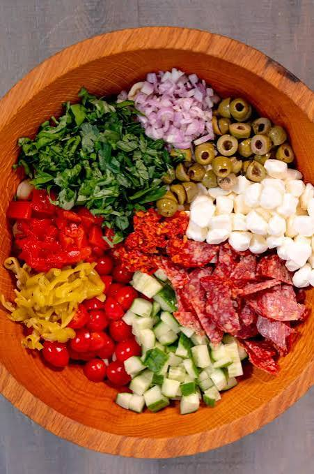

Italian Pasta Salad

Description:
This Italian pasta salad that's loaded with tri-color rotini pasta, salami,
bell peppers, and fresh mozzarella balls is quick to make and full of flavor
for a delicious summertime salad.
Ingredients:
- Pasta: This colorful Italian pasta salad recipe starts with tri-color rotini pasta.
- Salami: Finely diced Italian salami lends meaty, salty flavor.
- Vegetables: You'll need green and red bell peppers, a red onion, and canned black olives.
- Cheese: Small fresh mozzarella balls add creaminess and rich bursts of flavor.
- Shredded Parmesan cheese, meanwhile, is the perfect finishing touch.
- Dressing: You'll need a cup of Italian-style dressing and three packages of dry Italian-style salad dressing
mix.
Steps:
- Gather all ingredients. Ingredients for Italian pasta salad including pasta vegetables salami cheese and
dressing
- Bring a large pot of lightly salted water to a boil. Cook rotini pasta at a boil until tender yet firm to
the bite, about 8 minutes. Drain and rinse with cold water until cool.
- Drained rotini pasta in a colander on a marble surface
- Combine pasta, salami, bell peppers, onion, mozzarella balls, and olives in a large bowl. Add salad dressing
and toss to coat.
- Bowl of pasta salad with vegetables cheese and a wooden spoon
- Season pasta salad with dry salad dressing mix and stir to combine.
- A glass bowl of prepared Italian pasta salad with a spoon next to grated cheese and packets of Italian
seasoning mix
- Sprinkle with Parmesan cheese before serving. Enjoy!
Go Back